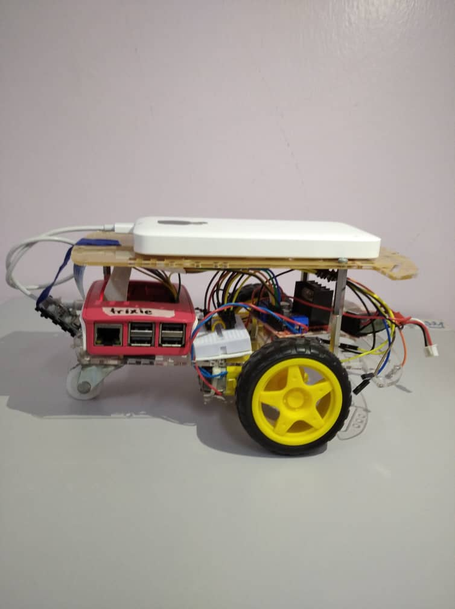

This project was carried out over the duration of three weeks and was expected to achieve the set objectives. The initial setup of the car is displayed on the left. At this stage, a control system for the car was successfully created where it could move forward, backward, turn right and left, and change its speed. When the user inputs a command, one of two actions is taken. Either to change the motor output—enabling the car to move forward, backward, right, left—or to change the speed of the car.
The final car was set up as shown on the right. A Pi Camera was mounted on the car and used for the image processing element throughout the project. Using Open CV, the car was capable of line following (both black and coloured lines) and shape recognition. To enable the car to follow the given track smoothly a PID controller was used, focusing on only the proportional and derivative constants.

While carrying out this project, some of the challenges I encountered were during the initial
set-up process where I was having issues with the GPIO pins on the Raspberry Pi. I had been
uploading my program to the car without using the 'GPIO.cleanup()' function. This led to
my car not following the control system I had wanted it to as it caused the wheels to spin
uncontrollably.
However, after much guidance, I managed to solve this issue.
Another challenge I faced was during the tuning of the PID controller. It wasn't so much of a
challenge
but, more a timely task to carry out as it took a lot of trials and error to correctly set it.
By the end of the three weeks, almost all objectives set at the start of the project were completed. These objectives include creating a control system for the car where the user could either control the direction or speed, a car that could detect and count the number of shapes present in an image, and car which could detect, follow and complete a line track (both black and coloured lines) using a PID controller. Images taken throughout the project are shown below.
Codes used can be found here